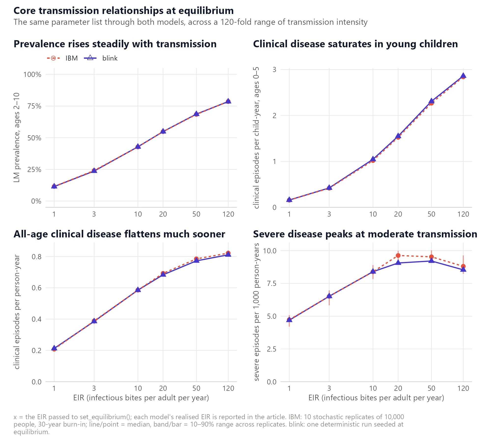

Not ready for real use
⚠️
fleetis a work in progress and is not validated for research, policy or operational use. It is published early so the approach and the comparison againstmalariasimulationcan be looked at and argued with, not so that anyone can rely on its numbers.Concretely, and honestly:
- The API is unstable.
run_simulation_ode()’s signature has already changed once and may change again without deprecation.- Known discrepancies against the IBM are open, not resolved. All-age severe incidence runs about 4–6% below
malariasimulationand sits outside its replicate band at two of six transmission levels; across the 63-country site-file comparisonfleetruns roughly 9% above the IBM on clinical and severe incidence, and that excess is not explained. See Where the two models differ.- Severe incidence and anything derived from it (including DALYs) should be treated as indicative only.
- Nothing here has been peer reviewed, and there is no versioned release.
If you need results you can defend today, use malariasimulation.
A fast, deterministic mean-field (ODE) twin of the malariasimulation individual-based model of Plasmodium falciparum malaria: same inputs, seconds per run, population-independent.
What it is
fleet reproduces the Griffin-style human model, structured by age and biting heterogeneity, coupled to the compartmental mosquito model. It is written in odin2 / dust2.
| Human states |
S / D / A / U / Tr, plus Ph (post-treatment) and Ph_c (chemoprevention) prophylaxis |
| Immunity | four acquired states IB / ICA / ID / IVA; two maternal terms ICM / IVM, algebraic rather than state variables |
| Mosquito, per species | E / L / P / Sm / EIP-chain / Im |
It exists to give the malariasimulation ecosystem a deterministic, Monte-Carlo-free companion that:
-
Takes the same inputs as the individual-based model (IBM).
run_simulation_ode()accepts amalariasimulation::get_parameters()list, with the usualset_*intervention builders layered on, unchanged. P. falciparum only. -
Is seeded at, and checked against, equilibrium. Initial conditions come from
malariaEquilibrium; with no interventions an undisturbed run relaxes off that seed by under half a percent over the first years and then holds, as the IBM does from the same seed. -
Produces postie-compatible outputs. The returned wide count table is malariasimulation-shaped, so a post-processing pipeline written for the IBM works on a
fleetrun unchanged, with no wrapper in between. - Is fast and population-independent. All compartments are per-capita densities, so a 30-year daily run takes a few seconds whether you model a thousand people or ten million.
Reach for the IBM instead when you need stochastic variation, individual heterogeneity beyond the mean field, or P. vivax.
Install
fleet compiles C++ at install time, as do several of its dependencies, so you need a working C++ toolchain first: Rtools on Windows, the Xcode command line tools on macOS, the usual build tools (r-base-dev or equivalent) on Linux.
# install.packages("remotes")
remotes::install_github("pwinskill/fleet")That also installs the GitHub-only hard dependencies (dust2, monty and malariaEquilibrium), which DESCRIPTION Remotes points at. It installs nothing from Suggests; the examples need two of those:
remotes::install_github(c("mrc-ide/malariasimulation", "mrc-ide/postie"))malariasimulation builds the parameter list and postie post-processes the output.
Quick start
library(fleet)
p <- malariasimulation::get_parameters()
# 10-year daily wide count table (malariasimulation-style columns)
out <- run_simulation_ode(timesteps = 3650, parameters = malariasimulation::set_equilibrium(p, init_EIR = 20))
# postie-format rates and prevalence, exactly as for an IBM run
postie::get_prevalence(out, diagnostic = "lm")$lm_prevalence_2_10
postie::get_rates(out)[, c("time", "age_lower", "age_upper", "clinical", "severe", "dalys")]Layer interventions with the ordinary malariasimulation builders and re-run; everything is applied automatically from the parameter list, with no extra arguments:
p <- malariasimulation::set_drugs(p, list(malariasimulation::AL_params))
p <- malariasimulation::set_clinical_treatment(p, drug = 1, timesteps = 1, coverages = 0.4)
p <- malariasimulation::set_bednets(
p, timesteps = 365, coverages = 0.6, retention = 3 * 365,
dn0 = matrix(0.387, 1, 1), rn = matrix(0.563, 1, 1),
rnm = matrix(0.24, 1, 1), gamman = 2.64 * 365)
out <- run_simulation_ode(timesteps = 3650, parameters = malariasimulation::set_equilibrium(p, init_EIR = 20))Three exported functions: run_simulation_ode() runs the model, ode_tuning() holds the solver and discretisation settings, and default_age_lower() gives the default graded age grid. Everything else comes off the parameter list.
How well does it match the IBM?

The same parameter list through both models across EIR 1–120: the IBM as the median of 10 stochastic replicates with a 10–90% band, fleet as one deterministic run. Across the grid LM prevalence matches the IBM median to within 1.6% and clinical incidence to within 2.6%; severe incidence is the outlier, and the reason is explained rather than hidden.
One of eight figures. The rest, the numbers behind them, and where the two models part company: Comparison with malariasimulation.
Documentation
| Get started | A worked tour: run the model, read the outputs with postie, layer on each intervention, handle seasonality and burn-in. |
| Using fleet well | Where the mean field departs from the IBM and what to do about it: things to do, things to leave alone, results to treat with caution, and what a run costs. |
| Comparison with malariasimulation | The evidence: core relationships, age structure, demography, seasonality, interventions, fifteen-year programmes, and 63 country site files. |
| Model specification | The formal version: scope, what the state space does and does not carry, and the full ODE system. |
| Parameter reference | Every malariasimulation set_*() function argument by argument: what fleet reproduces exactly, what it approximates, and what it rejects. |
Function reference: ?run_simulation_ode, ?ode_tuning, ?default_age_lower. Contributing: CONTRIBUTING.md.
License
MIT. Copyright (c) 2026 Peter Winskill. Full text: LICENSE.md.